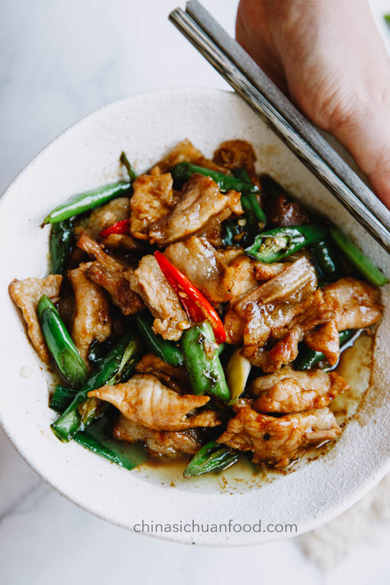

Stir Fry Recipes
1. Beef and Broccoli Stir Fry
Ingredients:
- 250g Beef, thinly sliced
- 1 cup Broccoli florets
- 1/4 cup Soy sauce
- 1 tablespoon Oyster sauce
- 2 cloves Garlic, minced
- 1 tablespoon Cornstarch
- 1 tablespoon Sesame oil
Instructions:
- Marinate the beef with soy sauce, oyster sauce, garlic, and cornstarch for 20 minutes.
- In a hot pan, stir-fry the beef until cooked through and tender. Remove and set aside.
- Add the broccoli to the pan and cook for 3-5 minutes until tender. Add the beef back to the pan and toss everything with sesame oil.
- Serve with steamed rice.
2. Shrimp and Vegetable Stir Fry

Ingredients:
- 200g Shrimp, peeled and deveined
- 1 cup Mixed vegetables (carrots, bell peppers, snow peas)
- 2 tablespoons Soy sauce
- 1 tablespoon Ginger, minced
- 1 tablespoon Hoisin sauce
Instructions:
- Stir-fry shrimp in a hot pan until pink and cooked through. Remove and set aside.
- Add vegetables to the same pan and stir-fry for about 5 minutes. Add shrimp back to the pan.
- Stir in soy sauce, hoisin sauce, and minced ginger. Cook for an additional 2 minutes.
- Serve with rice or noodles.